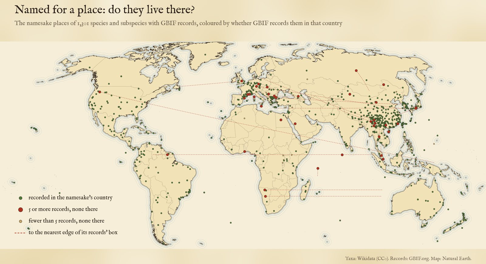
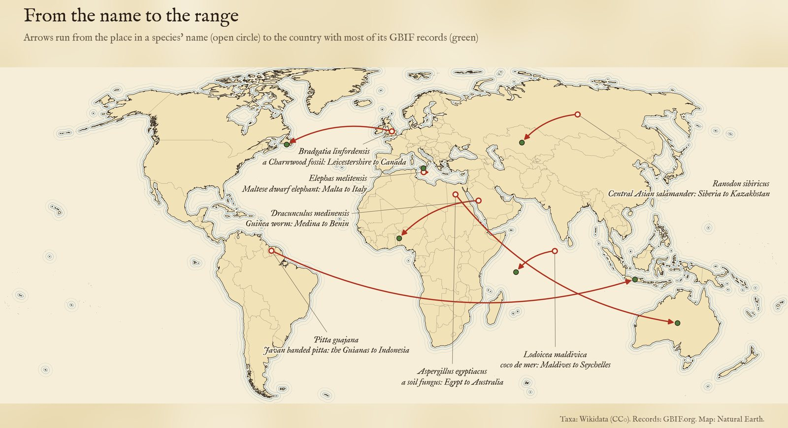
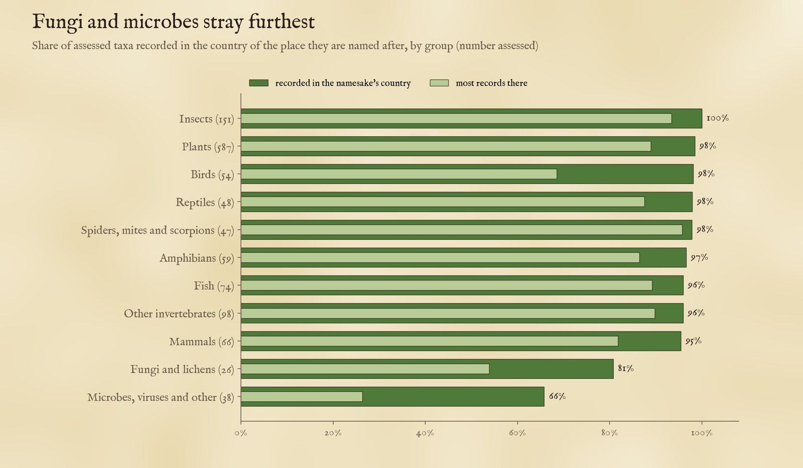
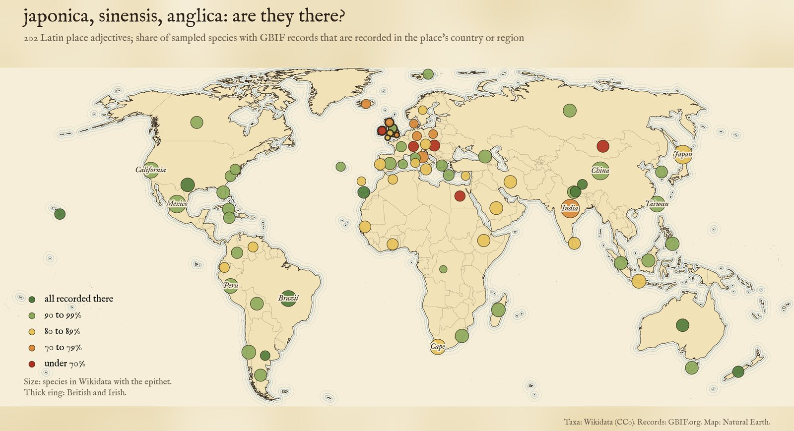
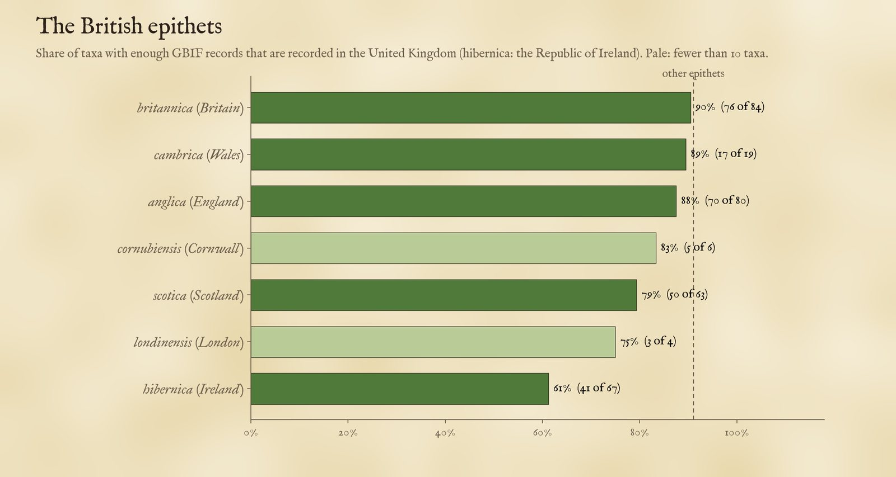

2,901 species and subspecies named after a place, drawn at that place. Green: GBIF records them in its country. Red: it does not. Tap a dot for the species and its range.
Thousands of plants and animals carry a place in their name: a japonica, a californicus, a frog named for a mountain or a moth for a town. Usually the place is where the first specimen was found, so you would expect the species to live there. But naturalists make mistakes, specimens travel, borders move and ranges shift. So I took every species and subspecies that Wikidata says is named after a place, 2,901 of them once duplicates and names honouring ships or universities are left out, and asked the Global Biodiversity Information Facility (GBIF) where they have actually been recorded.
On the map each dot sits at the namesake place. Tap one to see the species, how many GBIF records it has and in which countries, and the box that encloses its records. Use the chips to switch to the second view, Latin place adjectives like anglica, scotica and hibernica, or to show one group of living things.
Of the 2,901 taxa, 2,423 match a GBIF taxon and 1,375 have at least one GBIF record with coordinates. Many species are known from a handful of specimens. Where a species has at least 5 records, or any record in the namesake's country, I can test it: 1,210 plants, animals and fungi, and 38 microbes and viruses that I keep apart. Of the plants, animals and fungi, 98% have at least one record in the country of the place they are named after, 88% have most of their records there, and 70% have no records anywhere else.
That is reassuring but not surprising. A species is usually named after the place its type specimen came from, and that specimen, or others collected with it, is often in GBIF, so a single record at home is easy to come by. The share with most of their records at home is the better measure: among the 253 species with 100 records or more it falls to 71%, because widespread species are recorded mostly elsewhere.

Namesake places of the assessed taxa. Red: 5 or more GBIF records, none in the namesake's country, with a line to the nearest edge of the records' box.
29 plants, animals and fungi have at least 5 records and none in their namesake country. I checked every one by hand. A first pass found 53, but 24 of those were errors in the data, not in the names: the same species entered twice under an old and a new name (5), regions such as Macedonia or Africa that Wikidata pins on one country (3), GBIF keys for synonyms that hold only a sliver of a species' records (7), and links to the wrong place altogether (9): a kangaroo rat of Baja California linked to the island of Trinidad, a mosquito of northern Australia linked to Dali in China, a fruit fly called montana, "of the mountains", linked to the state of Montana. Those are removed or corrected. Of what is left, a few are real misnomers:
Most of the others are gaps in the records rather than wrong names. Dracunculus medinensis, the Guinea worm, is the "little dragon from Medina"; it was once common in Arabia, but it is now nearly eradicated and its 25 GBIF records are in Benin, the United States, Australia and India. Elephas melitensis, an extinct dwarf elephant of Malta, has 31 GBIF fossil records, all from Sicily. Bradgatia linfordensis, a fossil from Charnwood Forest in Leicestershire more than 550 million years old, is recorded in GBIF only from Newfoundland. And some sit just over a border: Verbascum adrianopolitanum is named for Edirne (Adrianople) in Turkey and recorded just across the frontier in Greece and Bulgaria, but not in Turkey. The full list of the cases checked, and what was done with each, is in the data.

From namesake to range: arrows run from the place in the name to the country with most GBIF records.
Reptiles, insects and spiders almost always live where they are named for: 98%, 100% and 98% are recorded in the namesake country, and so are 98% of 587 plants. Birds pass the test (98%) but only 69% have most of their records at home, because birders record widespread species everywhere. Fungi (81%) and microbes (66%) do worst: Aspergillus egyptiacus, first described from Egypt, has 297 of its 393 records in Australia and none in Egypt; fungi and bacteria turn up wherever someone sequences soil, and many microbe "records" are strains held in culture collections far from home.

Share of assessed taxa recorded in the namesake's country (dark) and with most of their records there (light), by group.
| Group | Assessed | Recorded there | Mostly there | Not there |
|---|---|---|---|---|
| Plants | 587 | 98% | 89% | 9 |
| Insects | 151 | 100% | 93% | 0 |
| Other invertebrates | 98 | 96% | 90% | 4 |
| Fish | 74 | 96% | 89% | 3 |
| Mammals | 66 | 95% | 82% | 3 |
| Amphibians | 59 | 97% | 86% | 2 |
| Birds | 54 | 98% | 69% | 1 |
| Reptiles | 48 | 98% | 88% | 1 |
| Spiders, mites and scorpions | 47 | 98% | 96% | 1 |
| Microbes, viruses and other | 38 | 66% | 26% | 13 |
| Fungi and lichens | 26 | 81% | 54% | 5 |
Wikidata's "named after" links are only a small part of the story: most species named for a place say so in Latin. I took 202 unambiguous Latin place adjectives, from anglica and londinensis to japonica and canadensis, covering 79 places, and found 61,815 species and subspecies in Wikidata that end with one. I checked every one with a British or Irish adjective and a GBIF key (660), and a random sample of up to 40 with a key for each of the others (7,756 in all). Regions that span borders, such as the Caucasus or the Himalaya, count as present in any of their countries; Siberia counts as all of Russia.
Each sampled species stands for the others with its adjective, so weighted back up to the whole list, about 91% of the non-British epithets are recorded in their place. The British ones do worse: 81% of 323 assessed. Hibernica is the weakest at 61%, partly because I count only the Republic of Ireland. Some misses are real: the "Scottish" comb-footed spider Robertus scoticus has 1,892 GBIF records, from Finland, Norway and Sweden, and none from Britain. Others are not about Britain at all: Chrysoblephus anglicus is a South African sea bream (the "Englishman"), and Urophyllum britannicum is recorded only in Papua New Guinea, home of the island of New Britain. And Potentilla anglica subsp. anglica has 2,154 records in Germany and France and none in Britain, probably because British records are filed under the species rather than the subspecies.

Latin place epithets: share of checked taxa recorded in the place's country or region.

British and Irish epithets: share of taxa with enough records that GBIF records in the United Kingdom (Ireland: the Republic).
Names. From Wikidata I took every species and subspecies with a "named after" (P138) link to a place with coordinates, the place's country, and the taxon's GBIF key; 175 taxa without a key were matched to GBIF by exact name. Where Wikidata gives a place's country as France or Denmark, its overseas parts as GBIF codes them (French Guiana, Greenland) count too, and continents and regions that span borders (Africa, Macedonia, the Guianas, the Caucasus) count as all their countries. Wikidata items for the same GBIF species and the same place are counted once (51 dropped), and namesakes that are ships or institutions rather than places are left out (36).
Records. For each GBIF taxon I asked the GBIF API for the number of occurrence records with coordinates and no geospatial issue, those records' counts by country, and the box enclosing them. A taxon is "recorded there" if any record is in the namesake's country, "not there" if it has at least 5 records and none in it. GBIF holds a synonym's records apart from the accepted name's, so a synonym key can show a species at home but not prove it absent; those cases (7) are not tested.
Checks. I went through every species first found missing from home (53), a random 30 of those found at home (3 had a wrong link), and every tested name whose Latin does not echo its namesake. In all 58 "named after" links pointed at the wrong thing, usually a person or a common name (the Bermuda grass, the Key lime, the San Jose scale), and are left out. Microbes and viruses were not checked by hand.
What this cannot say. GBIF is a huge but uneven archive: Europe, North America and Australia are recorded far more densely than the tropics, some countries share little data, and records of rare species often include the type specimen itself, which makes "recorded there" easy. Country is a coarse test: a species named after a town may live only on the far side of its country, and one named for Siberia passes if it is recorded anywhere in Russia. Marine records count for a country when GBIF places them in its waters; records on the high seas or in disputed areas have no country, and the 9 namesakes out at sea or in Antarctica cannot be tested. The boxes are cruder still. Wikidata's "named after" links are incomplete, and the hand checks above will not have caught every wrong one among the untested names. The Latin epithets can only say what a name looks like, not what its author meant, and two spellings of one name on one GBIF key are counted once. Treat single species as leads to check.